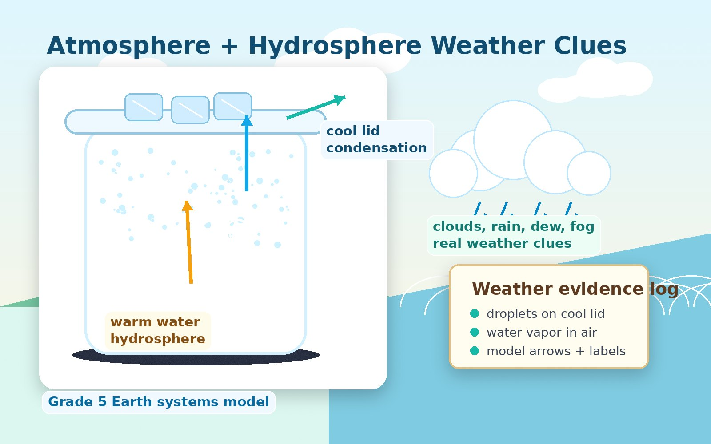

Grab this free lesson and explore condensation, clouds, and tiny tabletop weather systems with your littles.

Kids build a mini weather system, compare what changes when a surface is cooled, and gather real evidence like little meteorologists.
Curious about weather clues? Grab this free lesson and turn a simple setup into a real science investigation at home.